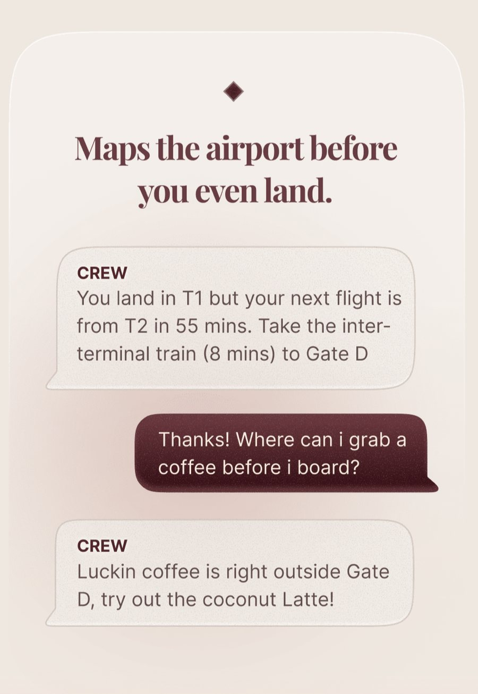
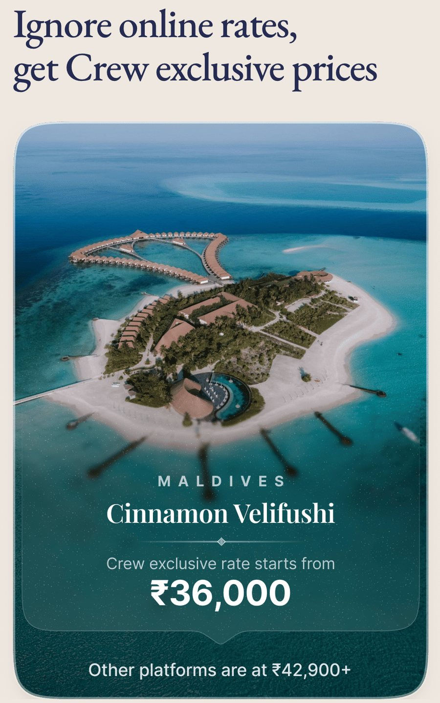
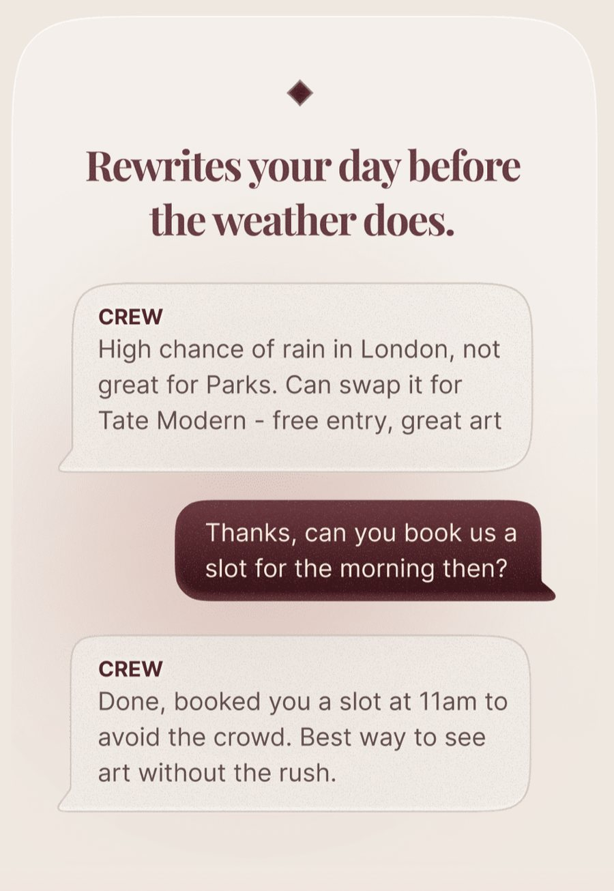
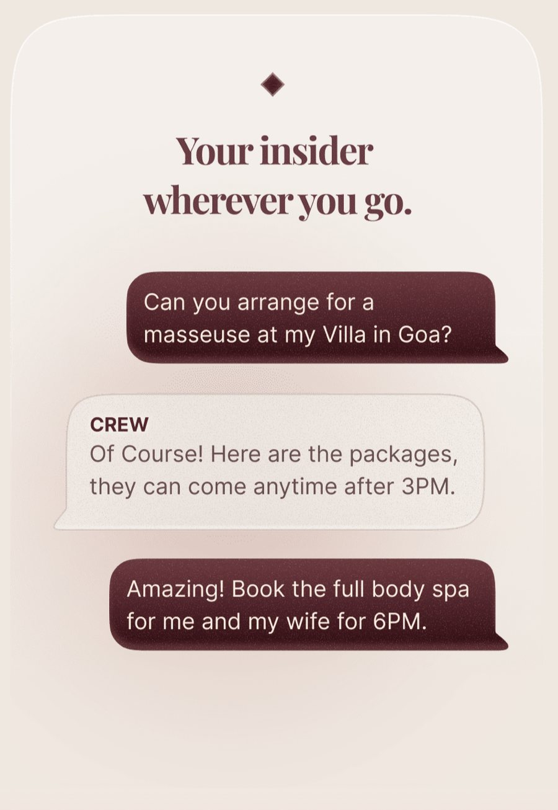

Product case study
One trip at a time
On CREW, Swiggy's travel concierge.

What CREW does that no one else does
You have fifty-five minutes to make a connection, in an airport you have never been to, and your next flight leaves from a different terminal.
You did not have to find that out. You were told before you landed, along with which train to take and how long it runs.

Nobody asked for that.
Any travel app can sell you the flight. Almost none will tell you about a terminal you have not reached yet — and the reason is not that the others never thought of it.
The customer who never asks the price
Read those exchanges for what is missing. Nobody asks the price. Nobody asks for a cheaper option, a second choice, or a comparison. A recommendation arrives and the answer is book it — the table at seven, the spa at six. The decision is handed over, and never checked.
Money is only half of that. The other half is someone who has decided that choosing is the expensive part.

Which makes the entrance worth a look. Ignore online rates, it says, and then sets its own against them — one of four price arguments before the app asks for ₹999.
A comparison is an invitation to check. Checking is the habit everything further in is built to remove.
Why a competitor cannot copy it
The reason is not the data.
To send that airport message you need the flight number, the connection, and both terminals. Every large booking platform holds all of it, for far more travellers, and none of them has ever sent anyone a message about a gate.
Three things have to be true at the same time. You need the trip. You need people who will stay with a customer through a day. And you need a relationship that makes spending an hour on one traveller reasonable. A booking platform has the first and cannot afford the second, because adding a service team breaks a business built on volume. A travel agent has the second without live data. A general-purpose assistant has neither the trip nor a reason to speak first.
That is a real position to hold, and very few companies are standing in it.
Who this is worth most to
Expertise does not travel with you. Someone who knows Bombay street by street lands in Lisbon knowing nothing, and a traveller on their twentieth European trip still has not done the paperwork for this particular country.
Almost everyone is in that position eventually. You are capable everywhere except here, for the next nine days.
It is worth most where the ground is new and the stakes are high — a first long-haul trip, a holiday that took a year to arrange, a honeymoon. Someone on their thirtieth flight through the same airport already knows where the lounge is.
CREW has just built the trip
Until this week the app held stays, flights, visa, cabs and forex, and each one was its own request. You looked for hotels in one place and flights in another. Nothing held a trip together.
Yesterday that changed. CREW now plans the whole thing — the flight out, the flight home, a day-by-day itinerary, and stays chosen against it.

You cannot move someone's Tuesday afternoon unless you know what was in their Tuesday afternoon. Until yesterday, nothing in the app held one.
So the foundation is built. What sits on top of it is still made by a person, one trip at a time, and only for the customers who ask.
The scaling paradox
Which raises the question underneath all of it. How does CREW grow without hiring thousands of these people, or becoming the thing it was built not to be?
Swiggy built its business on physical dispatch, where a rider is interchangeable. One in Indiranagar can deliver in Koramangala and the routing works out the same. That is what let the fleet scale.
The people who do this job are not interchangeable. They need hard knowledge — visa rules, connection windows, what an airport is like at six in the morning — and the softer kind, which is harder to hire for: staying calm, reading a mood, knowing when not to speak.
That bar exists because the stakes do. A wrong burger is a refund and an apology. A missed visa clause or a broken connection is somebody's one holiday of the year.
The thing that makes CREW hard to copy is the same thing that makes it hard to grow.
These people are rare. That is the moat, and it is also the ceiling.
Anything that scarce has to be rationed, and CREW rations it sensibly. It comes with a booking big enough to pay for it.
So the best proof of what CREW is worth arrives only after you have already trusted it with a trip. You find out whether you can hand over a trip by handing one over.
The launch raises that stake. CREW can now take all of it.
What to build, and in what order
The aim is to spend those people only where a person is genuinely needed.
Most of the messages are not judgement calls. A gate change. A delay. A connection now too tight. Rain against an outdoor afternoon. Each is structured data checked against a plan the app now holds, and can go out without anyone touching it.
Above those sit the ones that change a plan or spend money. The system finds the alternative and writes the message; an assistant reads it and approves. The person moves from producing the work to signing it off.
Everything else goes to someone who decides.
The second change is smaller and worth more. Requests arrive as one message and get worked as one job. A couple wants a day at a vineyard outside the city — and inside that sentence are seven questions. Is it open that day. What time. What to wear. Is there lunch. How do they get there. Who books the car. And can they get onto the tasting that is always full.
Six have answers already. One does not. Today all seven wait for the same person.
Then the third, and it compounds. When an assistant solves the one with no answer, it is written down against that place — what worked, and who to call when the obvious number does not.
The booking was never the output. The output was a fact nobody had recorded.
Done well, the traveller experiences it as someone paying attention. Underneath, it was arithmetic.

Some of this stays human for good. A masseuse at a villa in Goa is not an API, and an assistant sitting on hold for a supplier who will not pick up is an expensive message-relayer. Nobody has automated being the person who is answerable once something has gone wrong.
How it reaches people without going mass
CREW is hard to find on purpose. It is not a tile inside the Swiggy app the way Instamart and Dineout are, because it was never meant to be for everyone.
But Swiggy already has an invitation, and since March it has two. One BLCK is invite-only and carries a travel benefit. The co-branded HDFC card now splits into variants, the BLCK version at the top: a one lakh a month income floor, and extra cashback on travel.
That is the shape every concierge that survived eventually took. Ten Lifestyle ended up inside private banks, Velocity Black inside Capital One. American Express never sold its concierge separately at all. None of them lasted as a standalone subscription.
Swiggy owns both halves already. The card is the gate, the membership is the invitation, and one accompanied trip is what a member feels before committing a whole holiday to it.
How you would know it worked
One number restates the whole argument: the share of trips where the customer never had to hold on. Never checked a confirmation, never chased a reply, never queried a bill that was supposed to be settled. Call it the let-go rate.
It needs a second beside it, because the first can be bought with headcount. Cost to serve — the human minutes one trip consumes. If the let-go rate climbs while that number falls, the service is running at software margins. If it climbs while the minutes stay flat, CREW has bought quality it cannot afford to keep.
And the test that would prove me wrong. Compare the members who lean on the service against those who only book and handle the rest themselves. If both come back at the same rate, the accompaniment was never the advantage, and the honest move is to unbundle it.
Disclosure: I have worked on part of this product. Everything here comes from material CREW has published or from using the app as a customer.